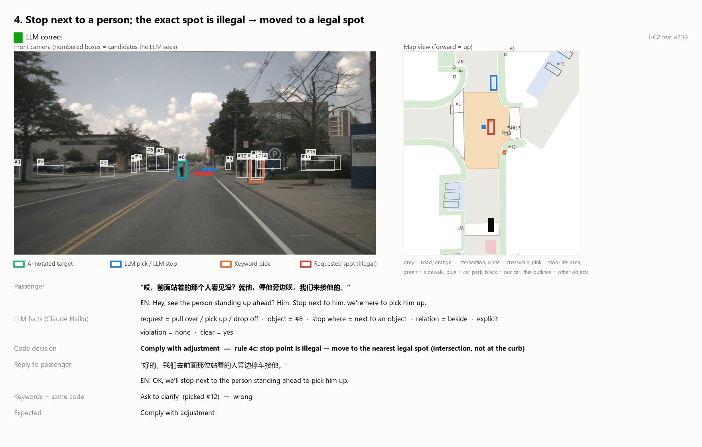

Lingwei Zhao · MSc Computer Science, Chalmers University of Technology
Projects
Seven projects in LLM evaluation, retrieval, generative models, reinforcement learning, real-time graphics and full-stack development. Filter by tech stack to see the ones you care about.
DriveAgent: where does an LLM help a driving agent?
A tool-using LLM agent on the nuScenes driving dataset that plans 3-second trajectories and handles passenger requests, tested against simpler methods. Every test ran once, under rules written down in advance.

One test case: the LLM finds the person the passenger means (#8); the code sees the exact spot is illegal and moves the stop to a legal one.
Which object does the passenger mean? (397 commands, %)
Keyword rules
53.1
Zero-shot CLIP
68.5
LLM + camera image
81.6
The LLM structures each request and deterministic code applies the map rules: 89.9% correct on 286 requests, about 20 points above the LLM deciding alone.
When unsure, the system asks instead of guessing: silent wrong actions fell from 44.6% to 8.8% on 148 new commands.
For planning, an 18-feature MLP reached 0.609 m L2 on 6,019 frames and the LLM gave no reliable gain; given a reference trajectory, it copied it in 197 of 200 frames.
Course project · Deep Machine Learning · Sep–Oct 2026
When should an LLM answer? Abstention in RAG
BM25, dense and hybrid retrieval over 20,000 paragraphs, with three prompts tested on 300 SQuAD v2 questions, half of them unanswerable from the evidence.
An explicit abstain instruction cut false answers from 0.22–0.24 to 0.13–0.17.
A cite-or-abstain prompt raised answer F1 from 0.40–0.46 to 0.58–0.65.
Paired tests on 2,700 generations give a cost rule: abstaining pays once a false answer costs more than 1.6–4.4 correct ones.
DDPM implemented in PyTorch from the derivation: closed-form 1D, point-wise 2D, and a permutation-equivariant denoiser for sets of 1,024 points.
The set denoiser's shared global feature removed the outliers that independent per-point denoising produces.
Extension: a 15.7M-parameter U-Net with self-attention trained on MNIST, with classifier-free guidance (fp16 and EMA on one T4 GPU).
Tech stack
PythonPyTorchU-NetGPU training
Skills
Generative modelsDerivation to code
Course assignments · Advanced Topics in ML · Sep–Oct 2026 · group
Reinforcement learning and bandits
Policy-gradient and value-based methods implemented by hand, plus a bandit policy of our own design.
REINFORCE in NumPy with hand-derived gradients; A2C in PyTorch solved CartPole-v1 in 369 episodes.
Optimistic initialisation raised tabular Q-learning reward on RiverSwim about 6.7-fold.
A variance-adaptive UCB policy cut mean regret from 21.8 (Thompson sampling) to 13.5 over 500 runs.
Tech stack
PythonNumPyPyTorchGymnasium
Skills
Reinforcement learningAlgorithm design
Course project · Advanced Computer Graphics · Apr–May 2026 · team of 3
Procedural terrain renderer
An infinite 3D landscape generated from noise and streamed in chunks around the camera. I built the vegetation: placement by biome and slope, L-system trees and GPU instancing. I also built the terrain materials: a 7-layer texture chain by height and slope, smooth normals and underwater light absorption.
A performance pass cut plant geometry to about 30% and vertex throughput by about 40%.
Tree fragment cost down about 67%; triangles per tree 380 → 250; vegetation chunks 81 → 29.
Schedules the day on a timeline, works out how much to do today to meet each deadline, tracks time and shows statistics. Scripts in other projects post progress reports to its API, so tasks update themselves.
10 data models and 11 REST route groups, with schema-validated input.
Progress API with dry-run preview, undo and an offline inbox that applies reports on the next start.
Interface in English and Chinese.
Tech stack
TypeScriptReactNode.jsExpressPrisma · SQLiteREST API
Several mailboxes forward into one Gmail account. A scheduled cloud job reads the last 24 hours of mail through the Gmail API. An LLM sorts it by rules written in a plain-text prompt, and one short digest arrives each day. The example uses made-up emails.
The digest lists what needs action and what real people wrote, and folds everything else into one line of counts.
Python standard library only (about 770 lines); a setup wizard runs the OAuth flow and tests fetching and sending.